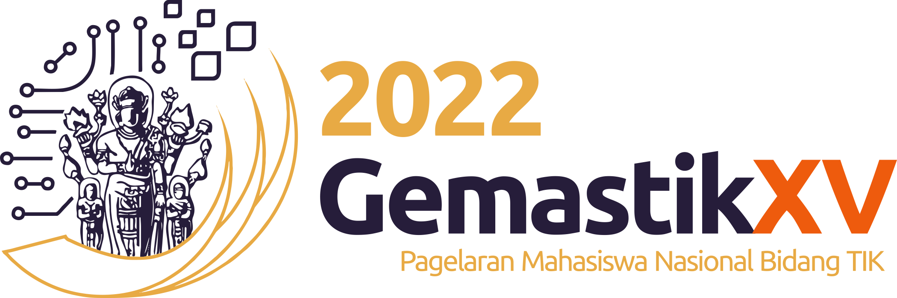

About Me
M.Eng in Artificial Intelligence | ITB (Expected 2026)
I am an AI researcher and engineer specializing in Computer Vision and Deep Learning. My expertise lies in CNNs, Transformers, and multimodal fusion for real-world perception systems. I am currently pursuing my Master's at Institut Teknologi Bandung (ITB), focusing on Knowledge Distillation for 3D Object Detection using LiDAR and camera data.
Key Achievements
- Gold Medal & Special Award - International IoT IYSA 2023
- Silver Medal - Global Competition for Life Science IYSA 2023
- Silver Medal - GEMASTIK Division IX Smart Device 2023
- Sakura Science Exchange Program - JST Japan 2023
- Outstanding Graduate - Andalas University 2023


Technical Expertise
Computer Vision
Expertise in Object Detection, Multimodal Fusion (LiDAR+Camera), and Knowledge Distillation. Building real-time perception systems.
Deep Learning
Strong foundation in CNNs, Transformers, and optimization. Proficient with PyTorch, TensorFlow, TensorRT, and ONNX.
Software Engineering
Python, C++, Docker, Git, Weights & Biases. End-to-end ML pipeline design and deployment on edge devices.
Professional Experience
Computer Vision Engineer (Freelancer)
Jan 2026 - PresentIndependent
- Building a fish counting system based on density estimation and regression-based deep learning models.
- Designing end-to-end pipelines from image acquisition to density map inference for aquaculture applications.
Computer Vision Engineer
Dec 2025 - PresentAutonoma (Part Time)
- Designing and building algorithms for Object Detection on Autonomous Vehicles.
- Developing perception pipelines integrating camera and sensor data for real-time vehicle understanding.
Capstone Project Advisor (AI/ML)
Oct 2025 - Dec 2025Dicoding Asah
- Guided teams on ML system design: problem framing, dataset curation, modeling, and deployment best practices.
ML Instructor & Project Advisor
Dec 2024 - Aug 2025Dicoding DBS
- Designed and delivered ML modules using PyTorch/TensorFlow for national coding camp participants.
- Supervised applied capstone projects with emphasis on experimentation and error analysis.
Selected Projects

BEVFusion on CARLA-Generated Data
Generated synchronized LiDAR and camera samples in CARLA to simulate nuScenes-style autonomous driving scenarios. Trained BEVFusion for multimodal 3D object detection and built a lightweight web dashboard for real-time inference visualization.

Chicken Monitoring System (IoT + CV)
Developed a YOLOv4 based pipeline to classify broiler chickens as healthy, sick, or dead. Delivered a full end-to-end system from on-site edge inference to a real-time web dashboard. Awarded Gold Medal at 2023 IYSA International IoT competition.
Fish Counting System via Density Estimation
Designed an end-to-end aquaculture monitoring pipeline using regression-based deep learning for density map inference. Built the full stack from image acquisition to model deployment for a real-world client application.
Graph-RAG Chatbot for Drug Repositioning
Built a biomedical QA system combining LLMs with a Neo4j knowledge graph for semantic drug-disease reasoning. Integrated PubMed embeddings and vector search to enable Cypher-based retrieval over structured biomedical relationships.